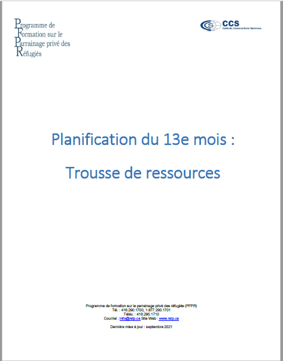
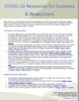
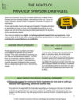
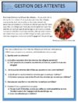
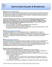

Fiches d’information
Garantir la réussite du parrainage
Filtrer les fiches d’information

Reçus officiels de dons
- 
Le 13e mois : Trousse de ressources
- 
Ressources sur le COVID-19 à l’intention des groupes de parrainage et des nouveaux arrivants
- 
Les droits des réfugiés parrainés par le secteur privé

Lignes directrices financières à l’intention des SEP

Couverture pour les soins de santé (PFSI) -- national
- 
Gestion des attentes
- 
Les différends et ruptures de parrainage

Déclaration des fonds et des avoirs des réfugiés parrainés par le secteur privé à leur arrivée